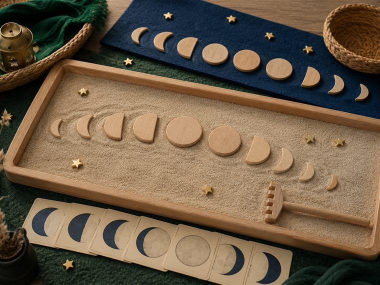

    <div class="subpanel" data-s="11"><div class="rcard" style="--rc:#8a8f98;--rc-soft:#eef0ee"><div class="rc-ic"><i class="gi" data-i="أركان" data-size="26"></i></div><div class="rc-b"><div class="rc-top"><span class="rc-name">أركان اليوم — ٤ أركان تُوزَّع عليها المجموعات</span><span class="rc-time">٣٠ دقيقة</span></div>
      <div style="background:#f2f8f4;border:1px solid #cfe6d8;border-inline-start:4px solid #1E5631;border-radius:13px;padding:10px 13px;margin-bottom:11px"><div style="font-family:var(--fd);font-weight:700;color:#1E5631;font-size:15px;margin-bottom:4px">🌱 معنى اليوم · «القمرُ آيةٌ بمنازل، ونفسي تطمئنُّ بذكر الله، والغفورُ يقبلُ التوبة»</div><div style="font-size:13px;line-height:1.85;color:#3a4a44">مساحاتُ لعبٍ حرّ. لكثرة الأعداد نفتح <b>٤ أركانٍ متوازية</b> بمراكز مختلفة؛ <b>وزّعي المجموعات عليها وتتناوب بينها في الفترتين</b> حتى لا تتكدّس. كل ركنٍ لمسةٌ تكاملية مع اللعب. <b>(أعمار ٥–٦: بناء/تلوين جاهز/قصّ ولصق/ترتيب/اختيار بطاقات/أدوار/حركة — بلا كتابة أو رسمٍ حرّ.)</b></div></div>
      <div style="display:grid;grid-template-columns:1fr 1fr;gap:11px">
        <div style="border:1px solid #E9E1D2;border-top:4px solid #0d6e6e;border-radius:12px;padding:12px 14px;background:#f7fbfa"><div style="font-weight:700;color:#1F4A39;font-size:14px;margin-bottom:6px">🏖 ركن الرمل · «منازلُ القمر»</div><div style="font-size:12.5px;color:#3a4a44;line-height:1.8;margin-bottom:8px">يشكّل الطفل في الرمل <b>منازلَ القمر</b> بالقوالب (هلال → نصف → بدر) ويرتّبها، ويردّد «قدّرَه اللهُ منازل»؛ لمسةٌ حسّية تربط دقّةَ التقدير بطمأنينة الليل بذكر الله.</div><div style="font-size:12px;line-height:1.7;color:#3a4a44"><div style="margin-bottom:5px"><b style="color:#0d6e6e">🧰 الأدوات:</b> رملٌ نظيف · قوالبُ (هلال · دائرة) · أدواتُ تشكيل · صواني · بطاقاتُ منازل القمر.</div><div style="margin-bottom:5px"><b style="color:#8a6a12">📋 دور المعلمة:</b> تدير التشكيلَ بمرح؛ تربط دقّةَ منازل القمر بحكمة الله وعزّته، وتغرس طمأنينةَ النفس بذكره.</div><div><b style="color:#1E5631">🌱 المعنى المركزي:</b> القمرُ آيةٌ بمنازل مقدّرة؛ أتفكّرُ وتطمئنُّ نفسي بذكر الله.</div></div><div style="font-size:11px;color:#6b5a2a;background:#fbf6ea;border:1px solid #ecd9a8;border-radius:8px;padding:6px 9px;margin-top:8px">📜 <b>قوانين الركن:</b> أبقى في ركني حتى ينتهي الوقت · أحافظ على أدواته · أتشارك وأنتظر دوري · أُعيد الأدوات مرتّبة.</div><div style="display:flex;align-items:center;justify-content:space-between;gap:8px;margin-top:10px"><a href="ln-print-d4.html" target="_blank" rel="noopener" style="display:inline-block;background:#0d6e6e;color:#fff;border-radius:8px;padding:5px 11px;text-decoration:none;font-size:12px;font-weight:700">🖨️ طباعة</a><span style="font-size:11px;color:#8a8f98;border:1.5px dashed #b9c2bd;border-radius:20px;padding:3px 9px;white-space:nowrap">▢ المجموعة</span></div></div>
        <div style="border:1px solid #E9E1D2;border-top:4px solid #C79A3B;border-radius:12px;padding:12px 14px;background:#fffdf7"><div style="font-weight:700;color:#1F4A39;font-size:14px;margin-bottom:6px">📚 المكتبة · «ليلٌ تطمئنُّ فيه القلوب»</div><div style="font-size:12.5px;color:#3a4a44;line-height:1.8;margin-bottom:8px">يتصفّح الأطفال <b>كتبًا وبطاقاتِ صورٍ</b> عن سكن الليل وطمأنينة الذكر وأذكار النوم، وأنّ <b>الغفورَ</b> يقبل التوبة؛ يحاورون بالصور.</div><div style="font-size:12px;line-height:1.7;color:#3a4a44"><div style="margin-bottom:5px"><b style="color:#0d6e6e">🧰 الأدوات:</b> كتبٌ مصوّرة · بطاقاتُ أذكارِ النوم المصوّرة · بطاقاتُ القمر ومنازله.</div><div style="margin-bottom:5px"><b style="color:#8a6a12">📋 دور المعلمة:</b> تقرأ عن سكينة الليل وطمأنينة الذكر؛ تغرس أنّ الغفورَ يقبل التوبة ويطمئنُّ به القلب — <b>بلا تجسيد للغيب</b>.</div><div><b style="color:#1E5631">🌱 المعنى المركزي:</b> بذكر الله تطمئنُّ نفسي، والغفورُ يقبلُ توبتي.</div></div><div style="font-size:11px;color:#6b5a2a;background:#fbf6ea;border:1px solid #ecd9a8;border-radius:8px;padding:6px 9px;margin-top:8px">📜 <b>قوانين الركن:</b> أبقى في ركني حتى ينتهي الوقت · أحافظ على أدواته · أتشارك وأنتظر دوري · أُعيد الأدوات مرتّبة.</div><div style="display:flex;align-items:center;justify-content:space-between;gap:8px;margin-top:10px"><a href="ln-print-d4.html" target="_blank" rel="noopener" style="display:inline-block;background:#C79A3B;color:#3a2a06;border-radius:8px;padding:5px 11px;text-decoration:none;font-size:12px;font-weight:700">🖨️ طباعة</a><span style="font-size:11px;color:#8a8f98;border:1.5px dashed #b9c2bd;border-radius:20px;padding:3px 9px;white-space:nowrap">▢ المجموعة</span></div></div>
        <div style="border:1px solid #E9E1D2;border-top:4px solid #1E5631;border-radius:12px;padding:12px 14px;background:#f4faf6"><div style="font-weight:700;color:#1F4A39;font-size:14px;margin-bottom:6px">🔎 أكتشف ما حولي · «أتفكّرُ وأرصدُ منازلَ القمر»</div><div style="font-size:12.5px;color:#3a4a44;line-height:1.8;margin-bottom:8px">يتأمّل الطفل <b>قرصَ القمر</b> آيةً من آيات الله، ثم يرصد بالعدسة <b>بطاقاتِ منازل القمر المصوّرة</b> و<b>يرتّبها بالتسلسل</b> (هلال ← نصف ← بدر)، ويميّز القمرَ آيةَ الليل من الشمس آيةِ النهار.</div><div style="font-size:12px;line-height:1.7;color:#3a4a44"><div style="margin-bottom:5px"><b style="color:#0d6e6e">🧰 الأدوات:</b> بطاقاتُ منازل القمر المصوّرة · عدسةٌ مكبّرة · لوحةُ فرزٍ وترتيب · عيّنات.</div><div style="margin-bottom:5px"><b style="color:#8a6a12">📋 دور المعلمة:</b> تدير الرصدَ والفرز؛ تربط دقّةَ المنازل بعزّة الله وحكمته، وتغرس التفكّر.</div><div><b style="color:#1E5631">🌱 المعنى المركزي:</b> للقمر منازلُ يُعرَفُ بها الزمن؛ آيةٌ محكمةٌ من العزيز.</div></div><div style="font-size:11px;color:#6b5a2a;background:#fbf6ea;border:1px solid #ecd9a8;border-radius:8px;padding:6px 9px;margin-top:8px">📜 <b>قوانين الركن:</b> أبقى في ركني حتى ينتهي الوقت · أحافظ على أدواته · أتشارك وأنتظر دوري · أُعيد الأدوات مرتّبة.</div><div style="display:flex;align-items:center;justify-content:space-between;gap:8px;margin-top:10px"><a href="ln-print-d4.html" target="_blank" rel="noopener" style="display:inline-block;background:#1E5631;color:#fff;border-radius:8px;padding:5px 11px;text-decoration:none;font-size:12px;font-weight:700">🖨️ طباعة</a><span style="font-size:11px;color:#8a8f98;border:1.5px dashed #b9c2bd;border-radius:20px;padding:3px 9px;white-space:nowrap">▢ المجموعة</span></div></div>
        <div style="border:1px solid #E9E1D2;border-top:4px solid #2C6A4D;border-radius:12px;padding:12px 14px;background:#fbfbf7"><div style="font-weight:700;color:#1F4A39;font-size:14px;margin-bottom:6px">🎨 فنوني الجميلة · «قمري ومنازله»</div><div style="font-size:12.5px;color:#3a4a44;line-height:1.8;margin-bottom:8px">يلوّن الطفل <b>منازلَ القمر الجاهزة</b> (هلال · نصف · بدر) ثم <b>يقصّها ويلصقها بالترتيب</b> في شريطٍ، ويردّد «قدّرَه اللهُ منازل».</div><div style="font-size:12px;line-height:1.7;color:#3a4a44"><div style="margin-bottom:5px"><b style="color:#0d6e6e">🧰 الأدوات:</b> ورقةُ منازل القمر الجاهزة (طباعة) · أقلام تلوين · مقصٌّ ولاصق · شريطُ ترتيب.</div><div style="margin-bottom:5px"><b style="color:#8a6a12">📋 دور المعلمة:</b> تسمّي المنازلَ وتربطها بتقدير الله الدقيق؛ تُثني على المشاركة لا الإتقان.</div><div><b style="color:#1E5631">🌱 المعنى المركزي:</b> أزيّنُ منازلَ القمر وأتفكّرُ في تقدير ربي.</div></div><div style="font-size:11px;color:#6b5a2a;background:#fbf6ea;border:1px solid #ecd9a8;border-radius:8px;padding:6px 9px;margin-top:8px">📜 <b>قوانين الركن:</b> أبقى في ركني حتى ينتهي الوقت · أحافظ على أدواته · أتشارك وأنتظر دوري · أُعيد الأدوات مرتّبة.</div><div style="display:flex;align-items:center;justify-content:space-between;gap:8px;margin-top:10px"><a href="ln-print-d4.html" target="_blank" rel="noopener" style="display:inline-block;background:#2C6A4D;color:#fff;border-radius:8px;padding:5px 11px;text-decoration:none;font-size:12px;font-weight:700">🖨️ طباعة</a><span style="font-size:11px;color:#8a8f98;border:1.5px dashed #b9c2bd;border-radius:20px;padding:3px 9px;white-space:nowrap">▢ المجموعة</span></div></div>
      </div>
      <div style="background:linear-gradient(135deg,#1F4A39,#1E5631);color:#fff;border-radius:12px;padding:11px 15px;font-size:12.5px;line-height:1.8;text-align:center;margin-top:11px"><b>المعنى المركزي المتكامل لليوم:</b> القمرُ آيةٌ بمنازلَ مقدّرةٍ من العزيز؛ أتفكّرُ فيها، وتطمئنُّ نفسي بذكر الله، والغفورُ يقبلُ توبتي.</div>
      <a href="ln-arkan-tatbiqiyya.html" target="_blank" rel="noopener" style="display:block;text-align:center;padding:10px;background:#eef6f4;color:#0d6e6e;text-decoration:none;font-weight:700;font-size:12.5px;border:1px solid #E9E1D2;border-radius:12px;margin-top:9px">صفحة الأركان التطبيقية الكاملة للوحدة ↗</a></div></div></div>
